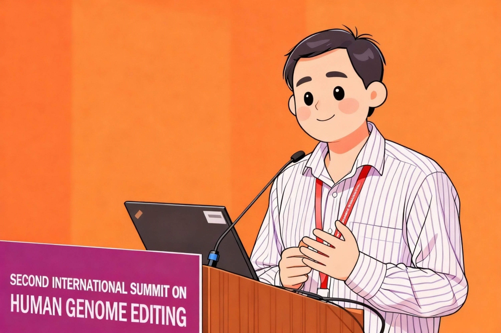

April 2017
我们生活在一个被基因编织的世界。每一段 DNA 不只是密码，更是一个孩子一生的命运起点。我们相信，技术不是用来掌控命运，而是用来释放被病痛捆绑的可能性。北京贺建奎实验室，便是在这样一种信念之上建立的科研机构——它关心的不是科研成果的耀眼光环，而是它是否真正改变了谁的命运。
这不是一个普通的实验室。我们试图回答的是：当科学有能力"改写未来"时，它该为谁服务？该如何服务？
在中国，罕见病人群基数庞大，却长期得不到主流产业的关注。他们并非少数，只是沉默。我们关注这些群体，不是出于慈善的姿态，而是出于一个科研机构应有的伦理直觉：科学的价值不应被市场定义，而应由它能否减轻痛苦来衡量。
我们选择从最困难的方向突破。我们研究人类胚胎基因编辑，专注于理解和控制基因修复的精度、安全性和伦理边界；我们开发面向罕见病的"平价"基因治疗，不是为了生产高价的商业药物，而是探索怎样用创新的工程路径，让治疗成为大多数人可承担的希望；我们推动酶促DNA合成仪的研发，不是为炫技，而是为让整个生命科学行业的底层工具链变得更可及。
这个实验室的建立，是一次责任感驱动下的再出发。它并不完美，也不避讳争议。但我们相信：如果我们能够将科学带回"慈悲"与"正义"的语境，它便不只是实验台上的胜利，也会是人类共同体的一次道德成长。
我们欢迎科研同行的批评，也欢迎有志者的加入。我们欢迎捐赠、合作、媒体访问，也欢迎伦理质询和监督。
我们不追求成为最大或最受欢迎的研究机构，但我们希望成为"对最真实问题负责任"的实验室。
这里，是北京贺建奎实验室的起点。
一个相信科学可以温柔地改变命运的地方。